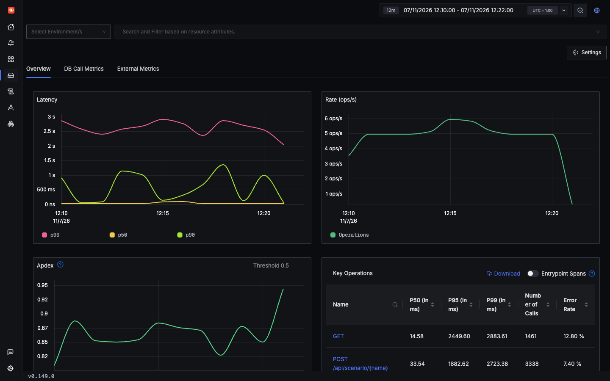
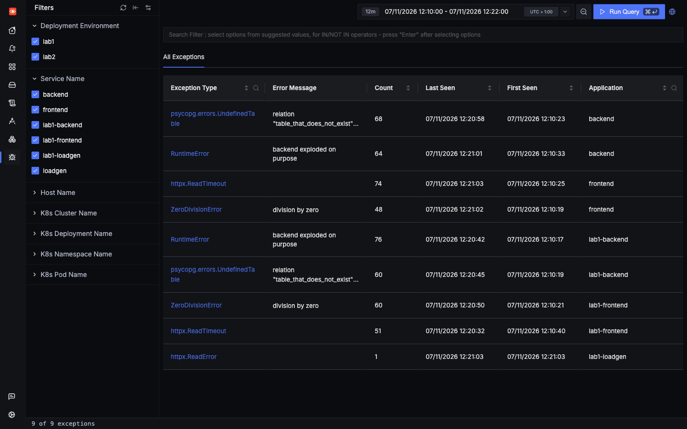
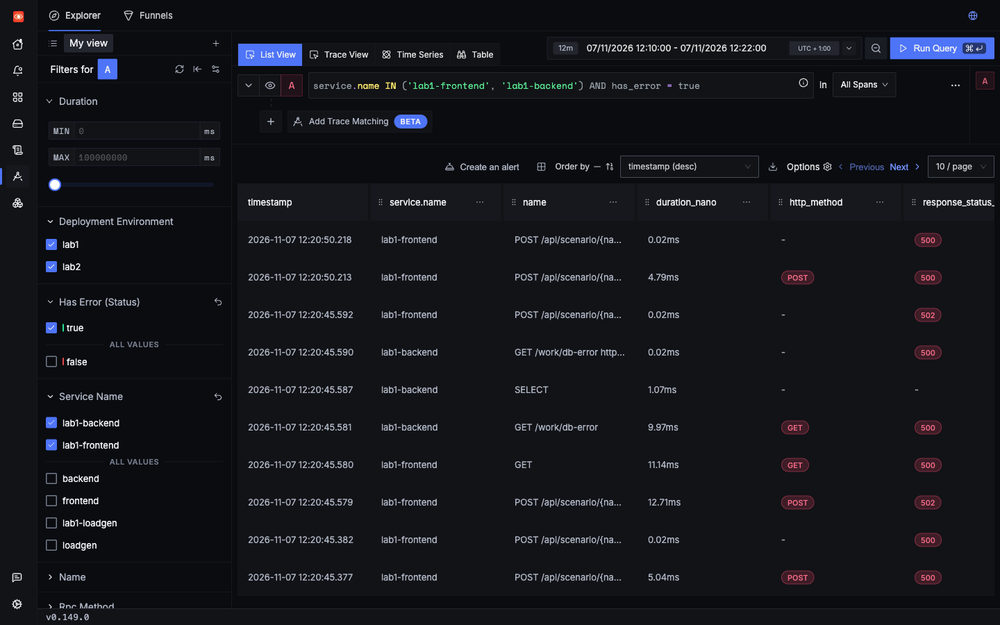
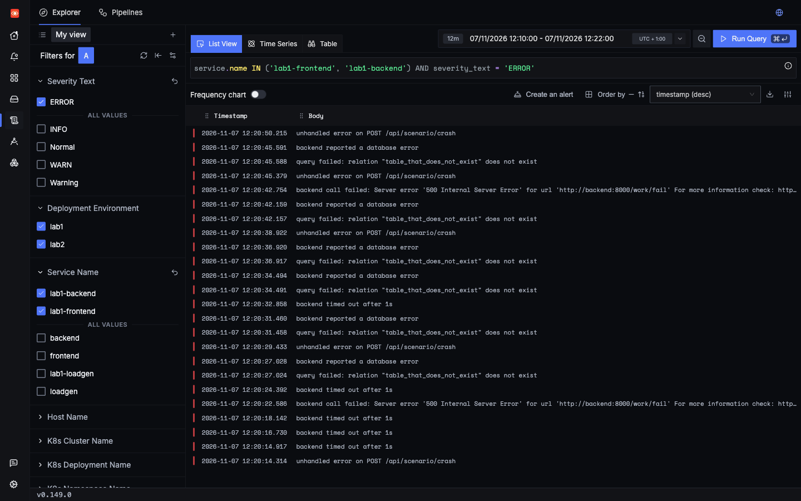
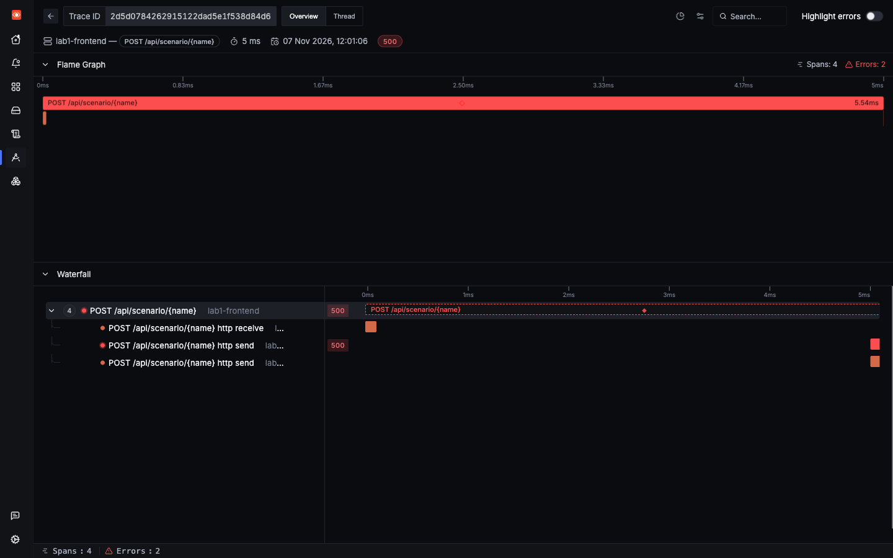

Lab 1: incident 1 of 6
An unhandled error
A request fails with HTTP 500. You will go from the error rate to the exact line of code, and learn why one kind of failure never shows up as an error at all.
1Trigger it
The crash scenario raises an unhandled exception in the frontend.
2Symptom
The caller gets a 500. A saved run answered in 10 ms with:
{"status": 500, "error": "ZeroDivisionError('division by zero')"}There is no trace ID in that response. Lab 1's app does not know it is being traced, so you find the trace by searching instead.
At the service level, lab1-frontend's error rate goes up. During the load run, 7.40% of its calls failed.

lab1-frontend service page. Seen in SigNoz UI Key Operations lists the error rate for each operation: 7.40% for POST /api/scenario/{name} in this load run.3Where to look
- Services shows that something is failing, and in which service.
- Exceptions groups failures by type. This is the quickest way to answer "what is breaking".
- From there, open a trace to see one concrete example.

ZeroDivisionError with its message and service. Both labs share this page, so check the Application column.4Search
Start broad, then narrow down to the scenario. Lab 1 has no scenario attribute, because nothing in the app sets one. Every scenario shares the operation POST /api/scenario/{name}, but the URL path is recorded for you as http.target.

http send are noise: each failed request appears more than once.Logs have their own search box. The handler in frontend.py logs every unhandled error:

severity_text = 'ERROR' to see every failure at once.A trap: exception.type works on logs but not on spans. On a span the exception is an event, not an attribute. SigNoz answers with a warning and zero rows.
5Evidence

lab1-frontend is involved, so the request never reached the backend.What this shows:
- The Server span has status Error, HTTP 500 and one exception event of type
ZeroDivisionError. - There is no
lab1-backendspan, so the failure happened inside the frontend. - The stack trace on the span names the file and line:
/app/frontend.py, line 64, ins_crash. - An ERROR log,
unhandled error on POST /api/scenario/crash, has the same trace ID.
All of that came from the agent the Operator injected. Nobody added telemetry code to this app.
6Root cause
labs/lab1-hands-off/app/frontend.py lines 62–6462async def s_crash(_p: dict) -> dict:
63 basket = {"items": 0}
64 return {"avg": 100 / basket["items"]} # ZeroDivisionError -> unhandled 500The basket has zero items and the code divides by that count. Nothing catches the exception, so it escapes as a 500.
The exception reaches telemetry in two ways: the agent's FastAPI instrumentation records it on the span, and this handler logs it through Python's logging, which the agent also captures:
labs/lab1-hands-off/app/frontend.py lines 225–229225@app.exception_handler(Exception)
226async def unhandled(request: Request, exc: Exception) -> JSONResponse:
227 # Common app pattern: log unhandled errors and return JSON.
228 log.exception("unhandled error on %s %s", request.method, request.url.path)
229 return JSONResponse({"status": 500, "error": repr(exc)}, status_code=500)7Resolution
Handle the empty basket, and return a clear client error instead of crashing.
async def s_crash(_p: dict) -> dict:
basket = {"items": 0}
- return {"avg": 100 / basket["items"]} # ZeroDivisionError -> unhandled 500+ if not basket["items"]:+ raise HTTPException(status_code=422, detail="basket is empty")+ return {"avg": 100 / basket["items"]}Try the fix
- Change it. Make that edit in
labs/lab1-hands-off/app/frontend.py, and save it. - Deploy it, from the repo's root. Saving the file isn't enough, because the pods run the image from the last build. What this command does.
make lab1 - Fire the same request. It should now answer HTTP 422 with
basket is empty, not 500. - Check the Exceptions page.
ZeroDivisionErrorshould stop growing. Watch Last Seen: it stays at the time before you deployed. The count doesn't go down, because older exceptions stay until they leave the time range. In our run it stayed at 8 after six more requests. The table has more than one page, so look on the next one if you don't see it. - Undo the fix when you're done. The bugs in this lab are there on purpose. With the fix deployed, this page's button can no longer show the incident, for you or anyone else using this copy of the lab. Lab 1's load generator also uses this scenario as one of its five kinds of error, which Lab 4's error-rate alert is tested with.
git restorethrows away your edit.git restore labs/lab1-hands-off/app/frontend.py make lab1
Related: a failure that is not an error
The bad_input scenario returns HTTP 400. Try it, then look at the span.
The status is Unset, not Error, so has_error = true never finds it and the error rate does not move. This follows OTel conventions, because a 4xx is usually the client's fault on a server span. If a spike in 4xx would matter to you, search for it and alert on it separately.
Check yourself: You search spans for exception.type = 'ZeroDivisionError' and get nothing. Why?
Check yourself: bad_input returns HTTP 400. How do you find it?